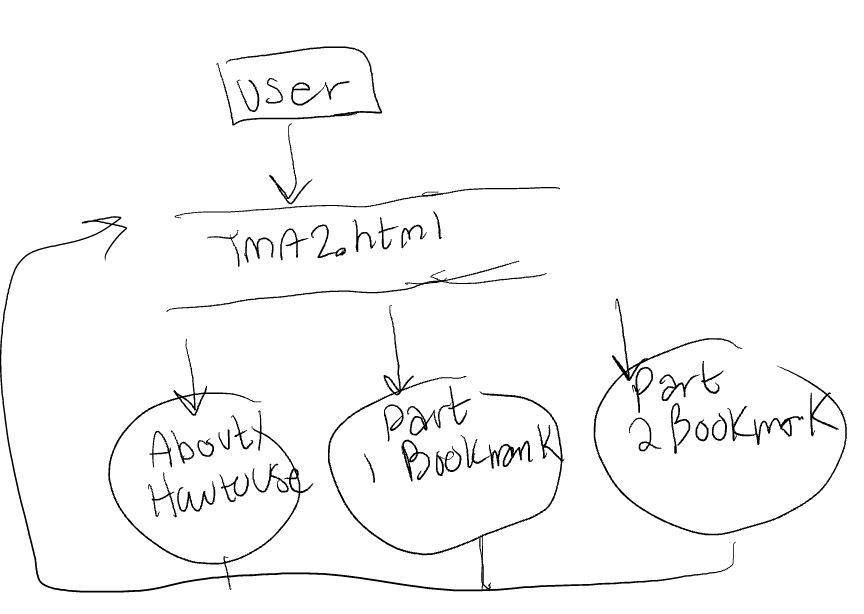
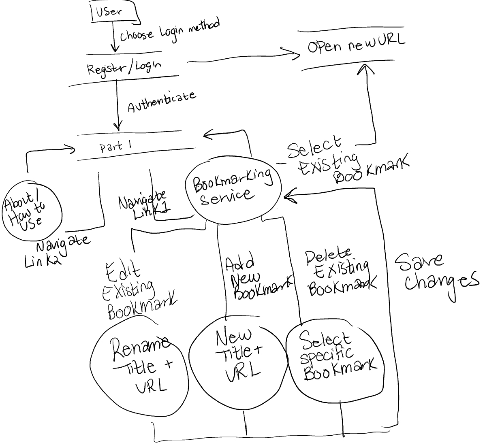
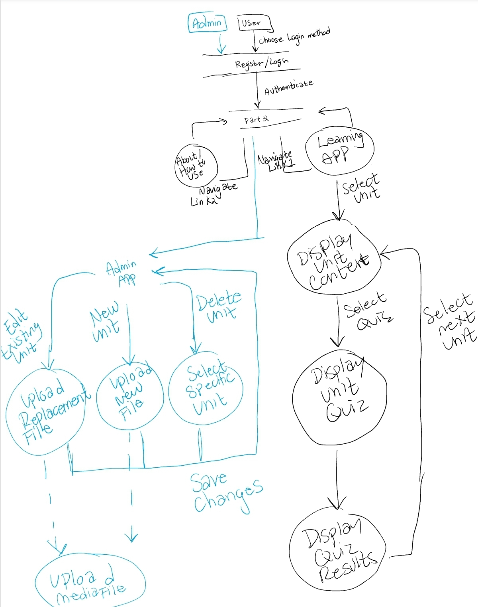

COMP 466 Advanced Technologies for Web-Based Systems
TMA 2
Erika Racette ID:
Jan 1, 2025 – April 30, 2025
Date revised and completed: September 16, 2026
Estimated hours: 60
This is a Web Page that fulfills the requirements of parts 1 and 2 of TMA 2
Instructions:
- Copy and Paste all assignment files inside TMA2 into a localhost server
.../TMA2/tma2.htm- Open
tma2.htmin a browser to get started and interact with the web page - Use the nav menu to navigate to each part of the TMA:
- Documentation: About
- Part 1: Bookmark Manager
- Part 2: Online Learning App
.../TMA2/shared/contains files used by both Part 1 and Part 2:shared/php/authentication.php- displays the shared login and registration interface.shared/php/login.php- validates login credentials, selects the appropriate database for Part 1 or Part 2, and creates the user session.shared/php/register.php- validates registration input, creates a new user account using a hashed password, and begins the user session.shared/php/logout.php- clears and destroys the current user session.shared/js/script-navbar.js- manages navigation between page sections and shared interface functionality.shared/styles/styles.css- contains shared styling for the main TMA2 page and authentication interface.shared/styles/styles2.css- contains shared styling used by the Part 1 and Part 2 web applications.shared/styles/favicon.ico- the browser tab icon.shared/styles/WallpaperDog-20677938.png- the header/background image used by the interface.shared/styles/pic1.jpg,pic2.jpg, andpic3.jpg- images used in the assignment documentation.
Part 1
A small web app using MySQL, PHP, HTML, and JavaScript that provides an online bookmarking service to users on the Internet. The web application has an interface with menus and navigation buttons. It has a name shown across all the pages.
User begins on welcome page with a list of ten most popular websites that users of the web application have bookmarked. Popular Bookmarks query groups all URLs by popularity and shows the top 10.
Once signed in, a list of bookmarks the user has made is displayed, and the user can browse any web site in the list in a new browser tab or window by clicking a link to the site.
The user can add new websites to the list and edit and delete any of the existing ones in the list. When adding or editing, user input is validated using JavaScript to make sure URLs are correct and active.
Analysis and Design
I divided the application into authentication, bookmark management, URL validation, and database functionality. Authentication is shared between Parts 1 and 2, while the bookmark manager uses its own database. The database contains a users table and a bookmarks table linked by user ID so each bookmark belongs to a specific account.
JavaScript handles the client-side interface, URL validation, and AJAX requests. PHP handles sessions and database operations, and prepared statements are used for adding, editing, deleting, and retrieving bookmark data.
The database used is: bookmark_database
Table: bookmarks
Stores all bookmarks added by users.
CREATE TABLE bookmarks (
bookmark_id INT(11) NOT NULL AUTO_INCREMENT, -- Primary auto-increment for each
user_id INT(11) NOT NULL, -- Foreign key: which user made the bookmark
title VARCHAR(255) NOT NULL, -- User chooses name for the bookmark
url VARCHAR(255) NOT NULL, -- Link to the website
PRIMARY KEY (bookmark_id),
FOREIGN KEY (user_id) REFERENCES users(user_id) ON DELETE CASCADE -- Auto-delete bookmarks if user is deleted
);
CREATE TABLE users (
user_id INT(11) NOT NULL AUTO_INCREMENT, -- Unique ID for each user
username VARCHAR(50) NOT NULL, -- Chosen username
password VARCHAR(255) NOT NULL, -- Encrypted password (stored using password_hash())
PRIMARY KEY (user_id),
UNIQUE KEY (username) -- Prevent duplicate usernames
);
Login/Register system (HTML and JavaScript) is shared between parts 1 and 2. PHP checks credentials, stores
sessions using $_SESSION, and AJAX is used to fetch bookmarks dynamically.
JavaScript ensures URL is well-formed and reachable before submission. HTTPS is appended if missing.
User Guide:
- Register or log in.
- See your list of personal bookmarks.
- Add a new one by filling out the title and URL fields.
- Edit or delete any bookmark item in the list.
Implementation
part1/index.html
- The index file/main interface for the Bookmark Manager. Contains the navigation menu, popular bookmarks section, user instructions, authentication iframe, personal bookmark list, and the form used to add and edit bookmarks. It links to the shared stylesheet and navigation script, as well as the Part 1 JavaScript file that provides the application's dynamic functionality.
part1/js/script-index.js
- The script dynamically fetches, renders, updates, and deletes user bookmarks from the database using asynchronous JavaScript and PHP integration. It also includes URL validation, session checks, conditional rendering, and logout functionality. When the page loads, the DOMContentLoaded event calls getPopularBookmarks(), which fetches the most popular bookmarks from all users.
part1/php/database_connection_part1.php
- Stores the MySQL database connection information and creates the connection to the bookmark_database database. If the connection fails, the error is logged.
part1/php/add_bookmark.php
- Validates and sanitizes submitted bookmark information, then inserts a new bookmark into the bookmarks table using a prepared SQL statement. The bookmark is associated with the currently logged-in user through the stored session user ID. A JSON response is returned indicating whether the bookmark was successfully added.
part1/php/check_url.php
- Receives a URL from JavaScript and uses PHP cURL to check whether the website is active. Checks network availability requested by the JavaScript URL validation to avoid browser CORS restriction.
part1/php/edit_bookmark.php
- Validates and sanitizes submitted bookmark information, then updates the selected bookmark in the bookmarks table using a prepared SQL statement. The query checks both the bookmark ID and current user ID so users can only edit their own bookmarks. A JSON response is returned indicating whether the bookmark was successfully updated.
part1/php/delete_bookmark.php
- Validates the selected bookmark ID and deletes the matching bookmark using a prepared SQL statement. The query checks both the bookmark ID and current user ID so users can only delete their own bookmarks. A JSON response is returned indicating whether the bookmark was successfully deleted.
part1/php/get_top_bookmarks.php
- Retrieves the ten most popular bookmarks from the bookmarks table by grouping matching URL, counting their occurrences, ordering them by popularity, and limiting the result to ten. The results are returned to the client as JSON.
part1/php/get_user_bookmarks.php
- Starts the user session and checks whether the user is logged in. If authenticated, retrieves all bookmarks belonging to the current user, ordered by most recently added, and returns the bookmarks and username to the client as JSON.
Part 2
A small-scale online learning management system that can be used to deliver online courses to learners.
These online courses are mini-Tagalog lessons written in custom EML/XML and stored in the database. When a learner retrieves a unit, the server-side PHP parser converts the stored EML/XML into HTML for display in the browser.
User Guide For Learners
- Unit-Based Learning: Each section of the course is organized into units.
- Interactive Quizzes: Quizzes test knowledge with no penalty for mistakes.
- Unlock Units: Completing a quiz unlocks the next unit.
User Guide For Teachers and Admins
- Create, update, delete learning units.
- Upload lessons/quizzes in XML format (.xml extension).
- Must include 1+ questions, each with 3 answer choices and 1 marked correct.
- Optional media (JPEG, PNG, MP3, MP4) can be attached.
Educational Markup Language (EML)
The custom EML uses the following tags:
<unit>- Wraps the entire lesson/unit.<title>- The title of the lesson.<content>- Holds all of the actual learning content.<header>- Used for headings throughout the lesson. This gets turned into an HTML<h3>.<text>- Used for regular lesson text and gets turned into an HTML<p>. Inside a question, it holds the question text.<list>- Starts a bullet point list and gets turned into an HTML<ul>.<item>- One item inside a list and gets turned into an HTML<li>.<questions>- Holds all of the quiz questions for the lesson.<question>- Holds one quiz question.<answers>- Holds the 3 possible answers for a question.<answer>- One possible answer. The correct answer usescorrect="true"and the other answers usecorrect="false".
Lesson and Quiz Format
<unit>
<title>Your Lesson Title</title>
<content>
<header>Headers go here</header>
<text>Paragraph text goes here</text>
<list>
<item>Bullet Point 1</item>
<item>Bullet Point 2</item>
</list>
</content>
<questions>
<question>
<text>Question text</text>
<answers>
<answer correct="false">Wrong answer</answer>
<answer correct="false">Wrong answer</answer>
<answer correct="true">Correct answer</answer>
</answers>
</question>
</questions>
</unit>
HTML Special Characters
<= <>= >&= &
Analysis and Design
The Online Learning Management System is divided into authentication, learner, administrator, EML parsing/validation, quiz, media, progress tracking, and database functionality. Authentication is shared between Parts 1 and 2, while Part 2 uses its own online_learning_database.
After login, the system determines whether the user is a learner or administrator. JavaScript sends asynchronous requests to PHP, PHP accesses the MySQL database, and the returned unit, quiz, media, and progress data is used to dynamically construct the learning interface in the browser.
Learners use the unit navigation to access available learning content, complete quizzes, receive feedback, and unlock additional units. Their progress is stored in the users table. Administrators receive an additional management interface that allows them to upload new EML/XML units, replace existing units, delete units, and optionally attach media.
The browser interface consists of an authentication area, unit navigation, dynamically generated learning-content area, quiz area, and an administrator section that is only displayed to users with administrator permission.
The database used is: online_learning_database
-- Table: users
CREATE TABLE users (
user_id INT(11) NOT NULL AUTO_INCREMENT PRIMARY KEY,
username VARCHAR(50) NOT NULL,
password VARCHAR(255) NOT NULL,
unit_progress INT(11) DEFAULT 0,
is_admin TINYINT(1) NOT NULL DEFAULT 0
);
-- Table: units
CREATE TABLE units (
unit_id INT(11) NOT NULL AUTO_INCREMENT PRIMARY KEY,
unit_title VARCHAR(255) NOT NULL,
unit_content TEXT NOT NULL
);
-- Table: quiz_questions
CREATE TABLE quiz_questions (
question_id INT(11) NOT NULL AUTO_INCREMENT PRIMARY KEY,
unit_id INT(11) NOT NULL,
question_text TEXT NOT NULL,
answer_one TEXT NOT NULL,
answer_two TEXT NOT NULL,
answer_three TEXT NOT NULL,
correct_answer INT(11) NOT NULL,
FOREIGN KEY (unit_id) REFERENCES units(unit_id) ON DELETE CASCADE
);
-- Table: media
CREATE TABLE media (
media_id INT(11) NOT NULL AUTO_INCREMENT PRIMARY KEY,
unit_id INT(11) NOT NULL,
media_content LONGBLOB NOT NULL,
media_format VARCHAR(50) NOT NULL,
FOREIGN KEY (unit_id) REFERENCES units(unit_id) ON DELETE CASCADE
);
Database Access SQL
The PHP files use prepared SQL statements to access and modify the learning database. The main queries are:
SELECT is_admin FROM users WHERE user_id = ?;
SELECT unit_progress FROM users WHERE user_id = ?;
UPDATE users SET unit_progress = unit_progress + 1 WHERE user_id = ?;
SELECT * FROM units ORDER BY unit_id ASC;
INSERT INTO units (unit_title, unit_content) VALUES (?, ?);
UPDATE units SET unit_title = ?, unit_content = ? WHERE unit_id = ?;
DELETE FROM units WHERE unit_id = ?;
SELECT * FROM quiz_questions ORDER BY unit_id ASC;
INSERT INTO quiz_questions
(unit_id, question_text, answer_one, answer_two, answer_three, correct_answer)
VALUES (?, ?, ?, ?, ?, ?);
DELETE FROM quiz_questions WHERE unit_id = ?;
SELECT * FROM media ORDER BY unit_id ASC;
INSERT INTO media (unit_id, media_content, media_format) VALUES (?, ?, ?);
DELETE FROM media WHERE unit_id = ?;
After login or registration, the system uses getAdminStatus() to determine whether the user is an admin. If so, admin controls (like uploading XML) become visible.
The uploaded XML is validated using validateEML() in PHP. This checks for required tags, allowed EML elements, exactly 3 answers per question, and exactly one answer marked correct.
If a media file is uploaded with the lesson, PHP checks its MIME type to make sure it is one of the accepted image, audio, or video formats. If valid, the file contents are stored in the media table as a BLOB.
Parser
Original learning content written in EML/XML is stored in the
unit_content column of the units table.
When a learner requests the units, PHP retrieves the stored EML/XML from the database.
The getUnits() function in
part2/php/learner/unit_functions.php passes each stored
unit_content value to parseEMLToHTML().
parseEMLToHTML() is the server-side EML parser. It loads the stored XML using
SimpleXMLElement and converts the custom EML tags into HTML:
<header> becomes <h3>,
<text> becomes <p>,
<list> becomes <ul>, and
<item> becomes <li>.
The resulting HTML is then returned to the learner interface and rendered by the browser.
Uploaded EML is processed separately by processUploadedEML()
in part2/php/admin/unit_functions_admin.php. This validates the uploaded
EML, extracts its title and quiz information, validates optional media, and preserves
the original EML/XML string for database storage.
Implementation
part2/index.html
- The index file/main interface for the Online Learning Management System. Contains authentication, learner unit navigation, dynamic lesson and quiz areas, administrator controls, EML instructions and examples, upload forms, and unit-management controls.
part2/js/script-admin.js
- Handles administrator functionality, including administrator-status checks, displaying administrator controls, populating the unit-management dropdown, and sending asynchronous add, replace, and delete requests.
part2/js/script-learner.js
- Retrieves units, quizzes, media, and learner progress. Dynamically constructs lessons and quizzes; displays associated media, evaluates quiz answers, provides feedback, locks and unlocks units; and updates saved learner progress.
part2/php/database_connection_part2.php
- Establishes the MySQL connection to the online_learning_database database.
part2/php/admin/add_unit.php
- Validates administrator permission and the uploaded XML file, processes and validates the uploaded EML using processUploadedEML(), then stores the original EML/XML content, extracted quiz questions, and optional media in the database.
part2/php/admin/delete_unit.php
- Validates administrator permission and deletes the selected learning unit and its associated data.
part2/php/admin/get_admin_status.php
- Retrieves the current user's administrator status and returns it to the client so administrator controls can be conditionally displayed.
part2/php/admin/get_units_admin.php
- Retrieves learning-unit data used by the administrator management interface.
part2/php/admin/replace_unit.php
- Processes and validates replacement EML, stores the original replacement EML/XML content, replaces the unit's quiz questions and optional media, and updates the selected unit.
part2/php/admin/unit_functions_admin.php
- Contains reusable administrator database functions, uploaded EML/XML processing through processUploadedEML(), EML structure validation through validateEML(), quiz operations, and media validation and management.
part2/php/learner/get_media.php
- Retrieves optional learning-unit media and returns the media content, format, and associated unit IDs.
part2/php/learner/get_quizzes.php
- Retrieves quiz questions and answers from the database for the learner interface.
part2/php/learner/get_units.php
- Retrieves learning units through the learner functions file. Stored EML/XML content is parsed into HTML on the server before the resulting unit data is returned to the learner interface as JSON.
part2/php/learner/get_user_progress.php
- Retrieves the logged-in learner's saved progress so JavaScript can determine which units should be locked.
part2/php/learner/set_user_progress.php
- Updates the learner's saved unit progress after completing a quiz.
part2/php/learner/unit_functions.php
- Contains reusable learner database functions for retrieving units, quizzes, media, and learner progress and for updating saved progress. It also contains parseEMLToHTML(), the server-side parser that converts EML/XML retrieved from the database into HTML for learner display.
All media used in the units were retrieved from free sources:
- Wikimedia Commons:
Blank Map of the Philippines
- Shutterstock: Natural Landscapes Video Clip
- iStockPhoto: Philippine Flag
Illustrations
Tutorials Used
Validating a URL
- How to Validate - URLs in JavaScript - freeCodeCamp
- HTML Status Codes - Mozilla
- Using fetch with async/await - Dmitri Pavlutin
- cURLs for 'has been blocked by CORS policy' messages when validating bookmark URLS - The PHP Documentation Group
PHP FILTER_UNSAFE_RAW Filter
Check File Extension
Custom Error Messages / Specific Error Messages
Note: May need to edit php.ini file to allow larger database uploads for media files in part2 (upload_max_filesize, post_max_size) The live hosting environment has database upload limitations so media uploads are limited to 2 MB.System Flow Diagrams


